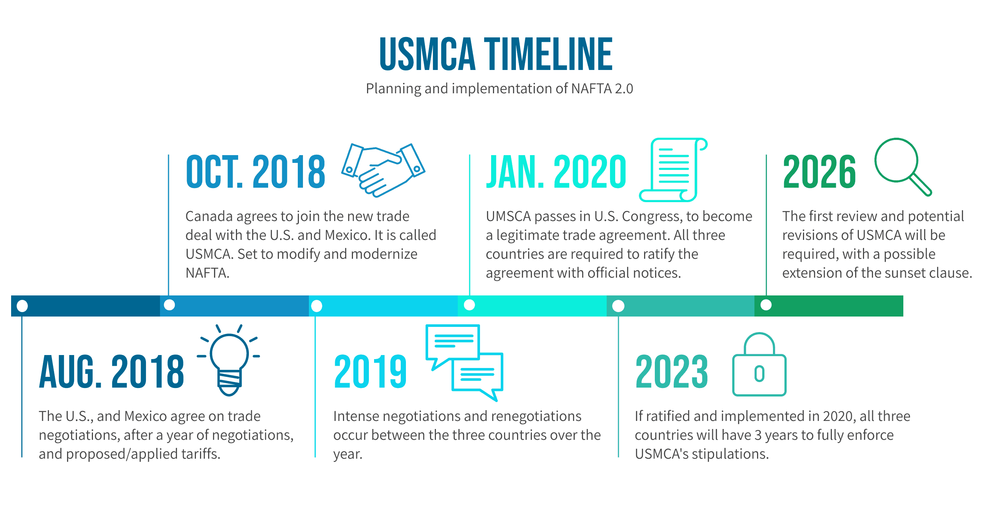

CUSMA Trade Agreements:
An important trade agreement would be CUSMA (Canada - US - Mexico Agreement), which is the trade
agreement
that allows for better trade within North America, replacing the older NAFTA since 2020.
Rules of Origin
Rules of Origin determine if a product was mostly made in North America, in which case they are able to receive trade benefits outlined in CUSMA
Preferential Tariff Treatment
CUSMA will reduce or eliminate tariffs on goods that are traded within the agreement, which makes products cheaper.
Certification of Origin
Businesses must have proof to show where the product was made to qualify for CUSMA trade benefits, distinct from “Rules of Origin,” which is an outline of what constitutes made in North America.
Regional Value Content Requirements
Certain products products like vehicles, have to have a certain amount of North American materials to qualify under CUSMA. Somehow different from Certification of Origin.
Labour Standards
CUSMA requires that all its members have laws to protect their workers’ rights to maintain fair conditions.
Environmental Protections
Encourages countries to enforce environmental laws in order to protect natural resources while trading amongst themselves.
